| No | Fokus Utama | Materi & Task | Sumber |
|---|---|---|---|
| 1 | Linux & Fundamental | Command dasar Linux, Konsep isolasi (Container vs VM), Setup Environment. | Geeksforgeeks |
| 2 | Docker Containerization | Docker CLI, Menulis Dockerfile yang efisien, Volume & Networking. | YT PZN |
| 3 | Orkestrasi & Compose | docker-compose.yml, Multi-container networking, Data persistence. | YT PZN |
| 4 | Kubernetes | File Deployment Service, Command Kuber, Cek Logs Pods, Up-down Deploy, Secret, Configmap | YT PZN |
| 5 | CI/CD & Automation | Docker Hub Registry, CI/CD Pipeline (GitHub Actions), Intro K8s. | YT |
| 6 | Tools Monitoring | Grafana, Zabbix, ELK, Jennifer | YT |
Command dasar Linux, Konsep isolasi (Container vs VM), Setup Environment.
Docker CLI, Menulis Dockerfile yang efisien, Volume & Networking.
Implementasi deployment lokal menggunakan hypervisor Oracle VirtualBox dengan parameter isolasi hardware sebagai berikut:
Menggunakan **Ubuntu Server** sebagai operating system dasar di dalam VirtualBox. Konfigurasi awal mencakup pemutakhiran paket kernel repository, pembuatan user non-root dengan hak akses sudoers, serta aktivasi VirtualBox Guest Additions untuk integrasi eksternal folder file-sharing host OS.
Linux System Administration adalah pilar operasional untuk mengelola, mengatur, mengamankan, dan merawat server berbasis Linux. Fokus utamanya adalah memastikan stabilitas sistem (uptime), optimasi alokasi resource (CPU, RAM, Storage), manajemen akses pengguna (multi-user authorization), serta pengamanan lingkungan server dari celah eksploitasi eksternal.
Berbeda dengan sistem operasi ber-GUI, Linux beroperasi langsung pada layer kernel CLI yang hemat resource, menjadikannya standar baku infrastruktur production server secara global.
Monitoring berkala terhadap proses yang berjalan, pemakaian RAM swap space, dan I/O disk storage mutlak dilakukan guna mencegah kegagalan sistem akibat kehabisan resource.
| Direktori | Fungsi Teknis / Deskripsi | Isi Konten Utama |
|---|---|---|
/bin | Binary perintah dasar sistem | ls, cp, mv, cat |
/sbin | Binary khusus untuk System Administrator (sysadmin) | reboot, fdisk, iptables |
/etc | Semua file konfigurasi sistem global | Konfigurasi network, services, sshd, dll. |
/home | Home directory untuk user reguler non-root | Data/file spesifik user (contoh: /home/iran) |
/root | Home directory terisolasi khusus superuser root | Data konfigurasi personal milik user root |
/var | Data variabel dinamis yang isinya terus berubah-ubah | Sistem log (/var/log), cache, database runtime |
/tmp | File temporary (sementara) sistem | Otomatis dihapus total saat server reboot |
/proc | Virtual filesystem berisi info proses & kernel runtime | Bukan file fisik di disk, representasi status memori |
/sys | Virtual filesystem parameter kernel & eksternal hardware | Atribut device subsystem dan driver eksternal |
/usr | Program, binary, and libraries user-installed | Aplikasi pendukung di luar core os kernel |
/opt | Software proprietary / third-party instalasi manual | Add-on aplikasi skala besar standalone |
/dev | Representasi file dari hardware device driver | Storage disk, USB storage, system terminal hardware |
| Command | Fungsi Teknis Operasional | Contoh Eksekusi |
|---|---|---|
pwd | Menampilkan absolute path direktori kerja saat ini | pwd |
ls -l | Menampilkan daftar file/folder disertai permission dan metadata | ls -l /var/log |
cd | Berpindah ke target direktori sistem | cd /etc/nginx |
mkdir -p | Membuat direktori baru secara rekursif termasuk parent folder | mkdir -p /mnt/data/app |
touch | Membuat file kosong baru atau memperbarui timestamp file | touch index.js |
chmod | Mengubah bit permission atau hak akses pada file/direktori | chmod 755 deploy.sh |
chown | Mengubah kepemilikan user dan grup atas suatu file/direktori | chown root:root config.conf |
df -h | Menampilkan sisa ruang penyimpanan disk dalam format human-readable | df -h |
free -h | Menampilkan kapasitas RAM yang digunakan, kosong, dan cache-buffer | free -h |
top / ps | Monitoring proses aktif secara real-time dan analisis ID proses (PID) | ps aux | grep node |
grep | Melakukan pencarian substring atau ekspresi reguler dalam file | grep "ERROR" app.log |
SSH (Secure Shell) bekerja pada Application Layer (Default Port 22) untuk mengontrol host server jarak jauh melalui saluran komunikasi terenkripsi kriptografi asymmetric key pair (Public & Private Key).
VM adalah emulasi komputer lengkap yang berjalan di atas software bernama hypervisor. Perbedaan mendasar terletak pada level abstraksi dan efisiensi pembagian instruksi komputasi host.
Di dunia nyata industri, strateginya adalah gabungan keduanya: VM digunakan sebagai server host, dan Docker berjalan di dalam VM.
Docker adalah platform terintegrated yang berfungsi membungkus kode aplikasi beserta seluruh dependensi library-nya ke dalam satu unit container steril terisolasi, memastikan aplikasi berjalan konsisten di semua env server host.
docker run).Tanpa Docker, berbagai runtimes (Java, Node, Python, Postgres) bercampur langsung di dalam satu sistem operasi host, memicu potensi *dependency hell*. Docker mengisolasi tiap runtime ke dalam ruang kontainer yang steril.
| Sintaks Docker CLI | Dampak Teknis & Operasional pada Sistem |
|---|---|
docker ps | Menampilkan daftar semua container yang saat ini sedang aktif/running |
docker ps -a | Menampilkan semua container di sistem (termasuk yang statusnya stopped/exited) |
docker images | Melihat daftar Docker Images yang sudah terunduh di lokal storage host |
docker pull nginx | Mengunduh/download target image dari Docker Hub Registry ke server lokal |
docker run -d -p 8080:80 nginx | Menjalankan container di background (detached) + mapping port host 8080 ke port container 80 |
docker stop <id> | Menghentikan (graceful shutdown) proses container yang sedang berjalan |
docker rm <id> | Menghapus container dari sistem lokal storage (container harus di-stop dulu) |
docker rmi <image> | Menghapus Docker Image dari lokal storage server |
docker logs <id> | Membuka interface stdout/stderr logs untuk melihat histori error runtime container |
docker exec -it <id> sh | Membuka tumpangan terminal shell interaktif (tty) masuk ke dalam file system container |
Definisi Teknis: Dockerfile merupakan skrip otomasi blueprint langkah demi langkah untuk membangun sebuah Docker Image secara berurutan.
Docker membangun image secara berurutan per baris perintah (layer-by-layer).
Jika baris perintah atau isi berkas di atasnya tidak mengalami perubahan, Docker akan menggunakan Cache Layer yang sudah ada tanpa melakukan eksekusi ulang. Dengan menyalin package.json dan menjalankan npm install sebelum menyalin source code utama, proses instalasi dependensi akan di-skip oleh Docker selama tidak ada perubahan library di dalam file manifes. Proses build kompilasi menjadi jauh lebih cepat.
| Kategori Perintah | Sintaks Docker CLI | Dampak Teknis Pada Sistem |
|---|---|---|
| Image Build | docker build -t app:stg -f Dockerfile.prev . | Mengompilasi blueprint Dockerfile menjadi image lokal dengan tag tertentu. |
| Container Lifecycle | docker run -d -p 3000:3000 --name web app:stg | Instansiasi kontainer di background (detached mode) disertai mapping port host:container. |
| Process Inspection | docker ps -a | Menampilkan seluruh status kontainer (running, exited, up-time, port assignment). |
| Active Execution | docker exec -it web /bin/bash | Membuka tumpangan terminal interaktif langsung ke dalam namespaces internal kontainer. |
| Resource Cleanup | docker system prune -a | Membersihkan seluruh container mati, dangling image, dan network tak terpakai sekaligus. |
| Data Persistence | docker run -v pgdata:/var/lib/postgresql/data | Mounting volume eksternal persisten guna mengamankan data dari sifat container ephemeral. |
| Host Binding Network | --host 0.0.0.0 | Menginstruksikan internal web server untuk membuka gerbang akses agar dapat dijangkau IP luar. |
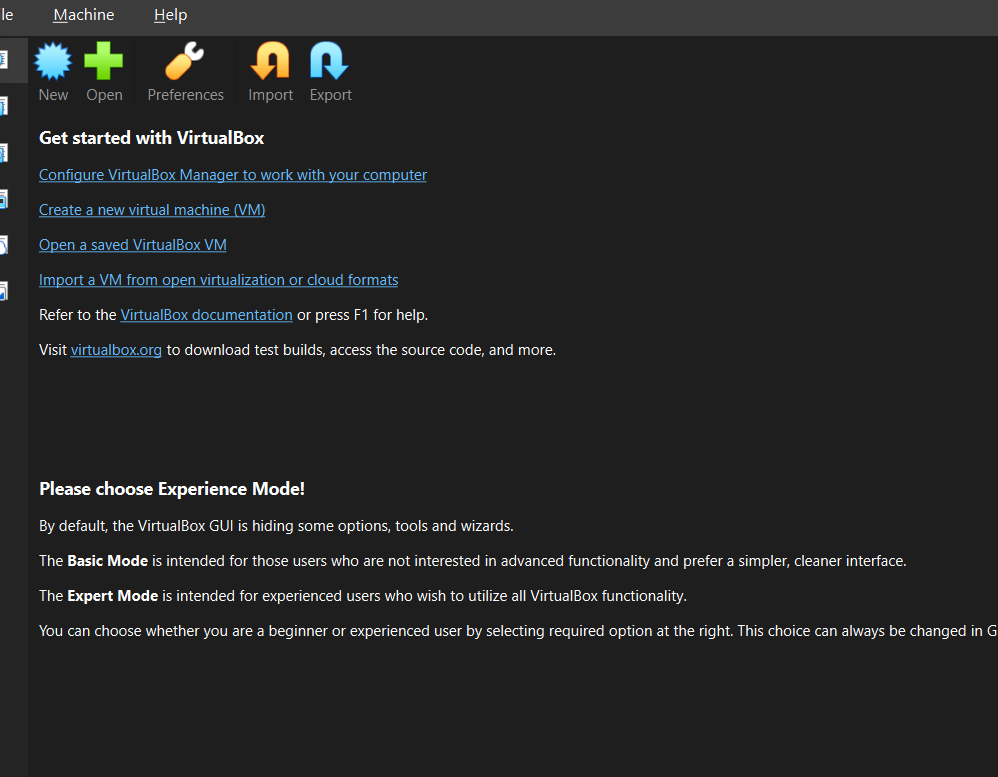
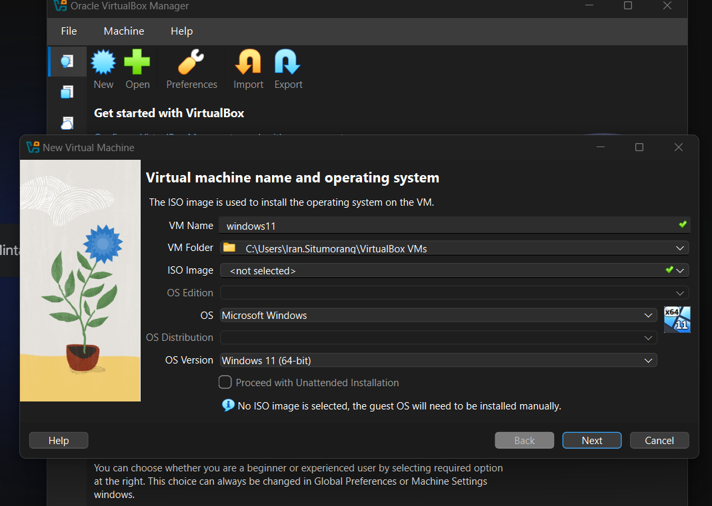
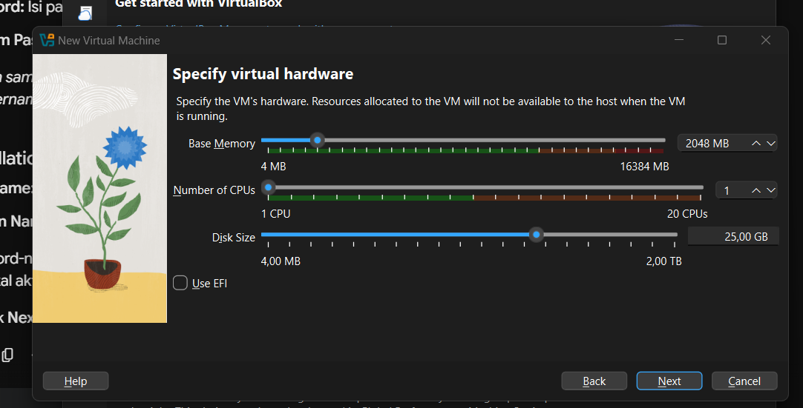
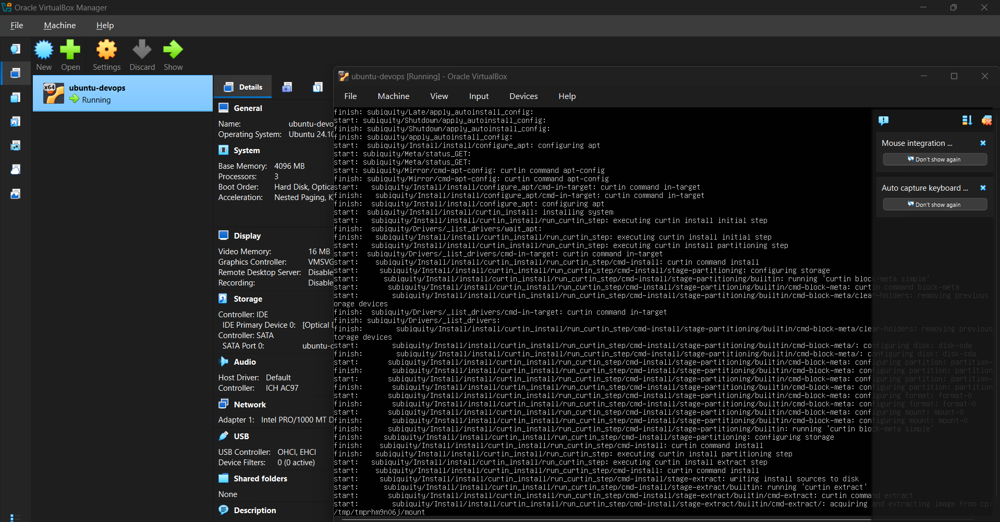
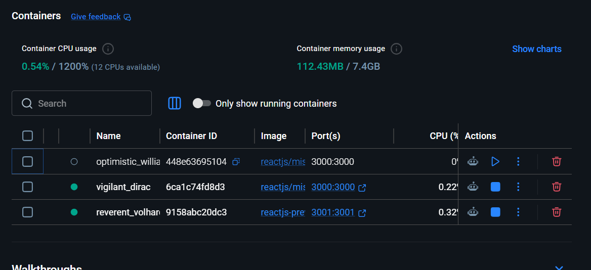
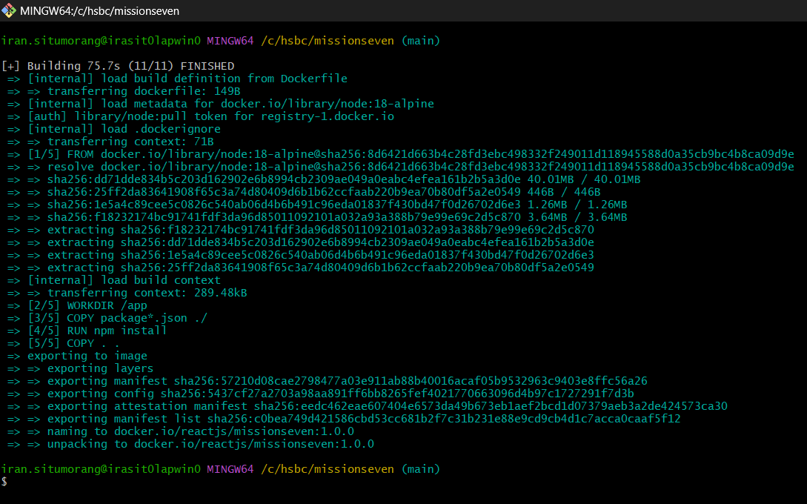
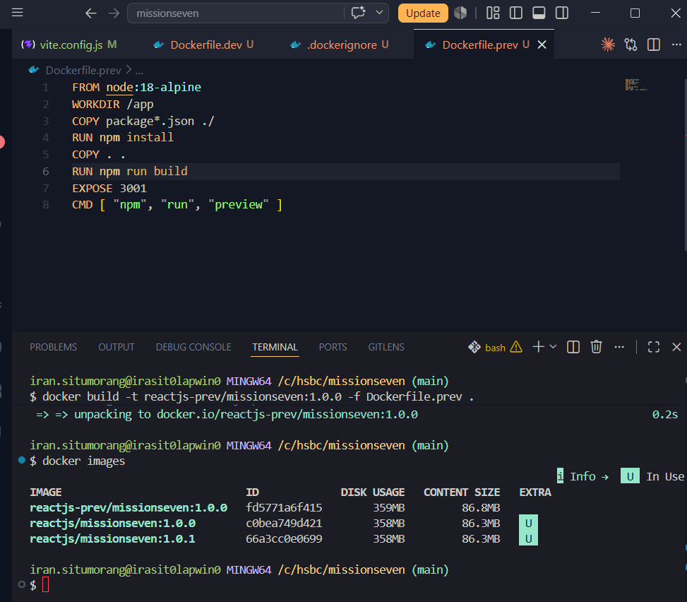
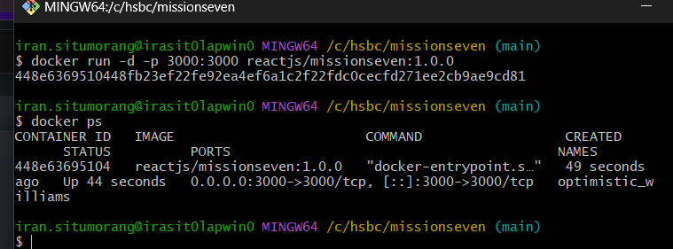
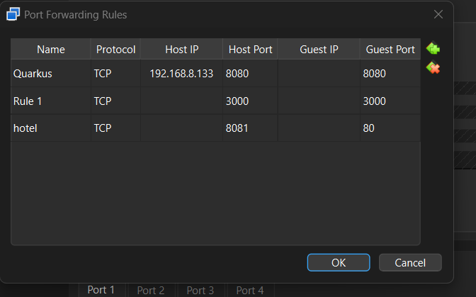
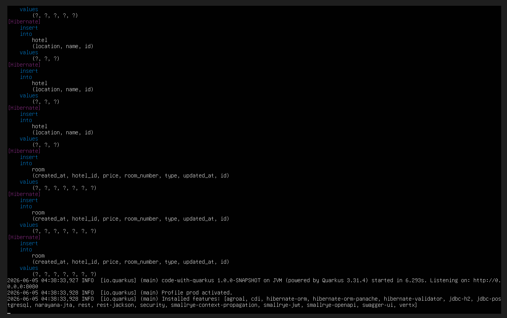
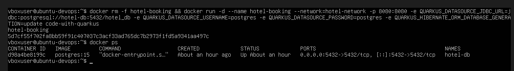
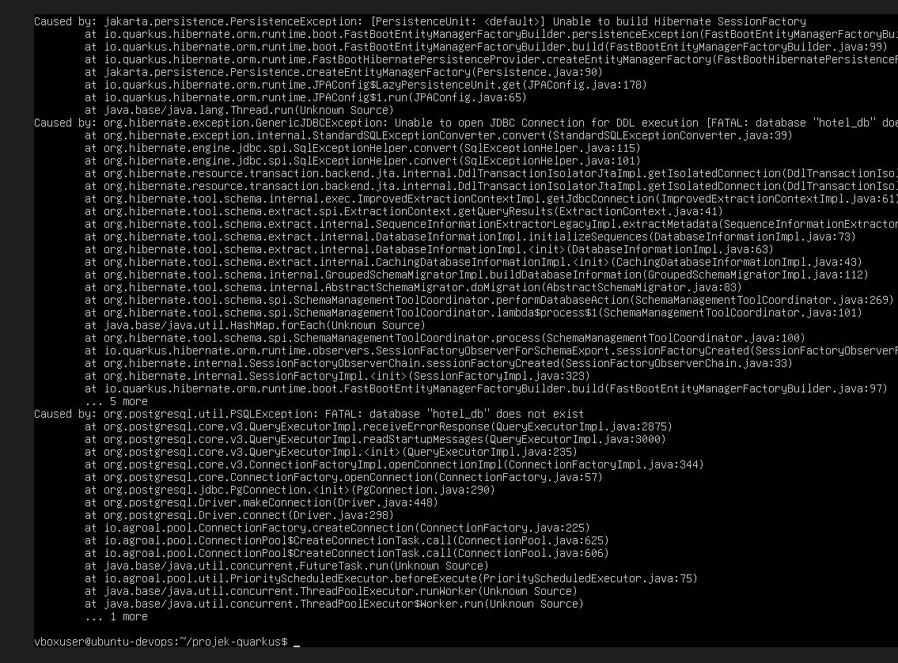
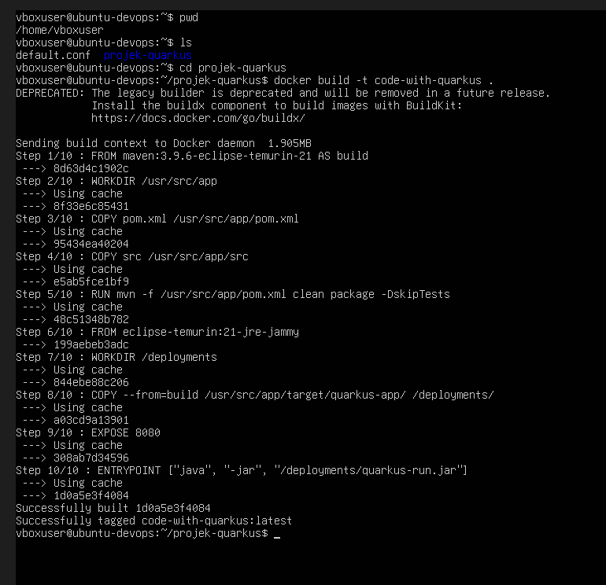
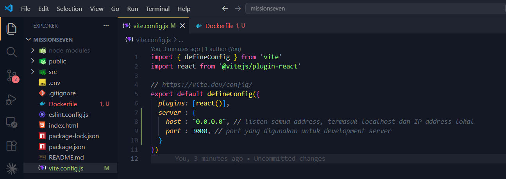
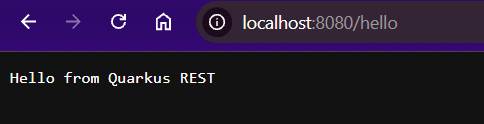
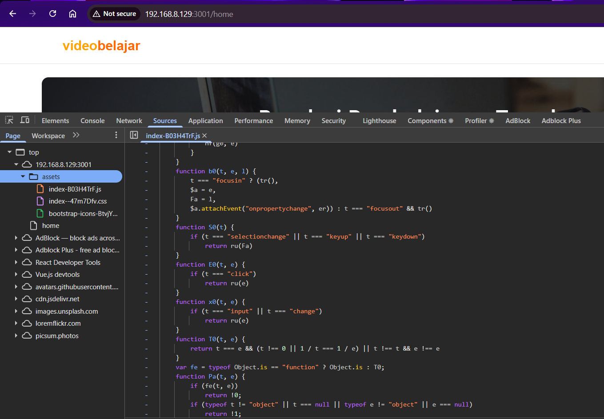
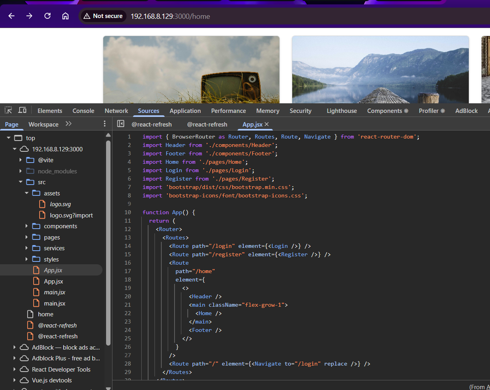